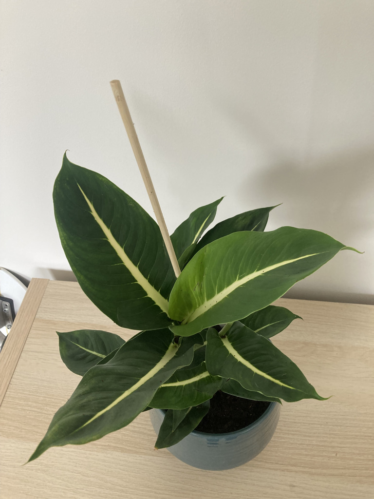
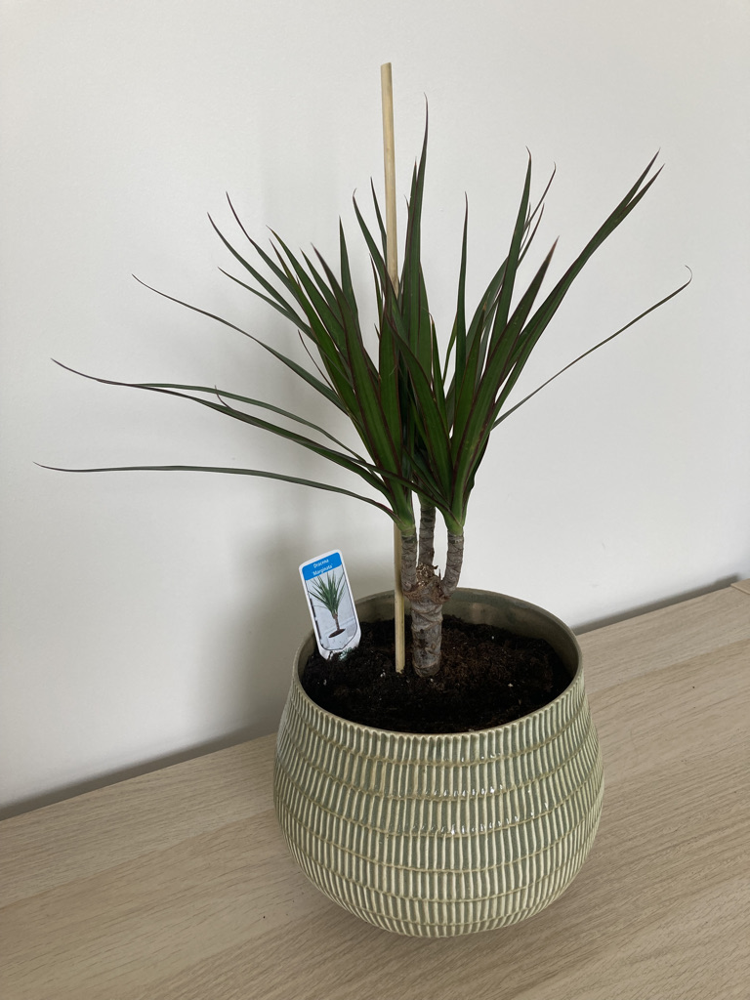
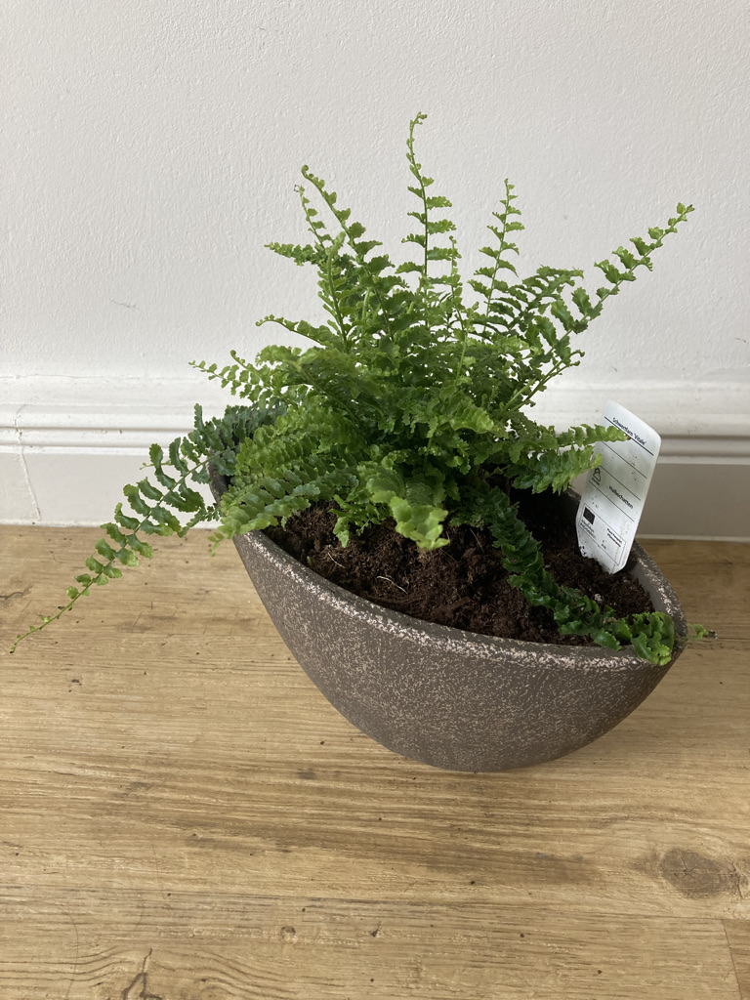
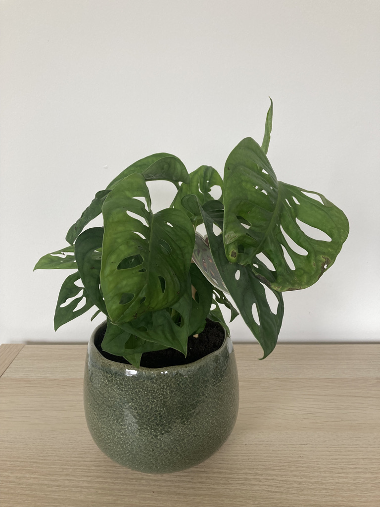
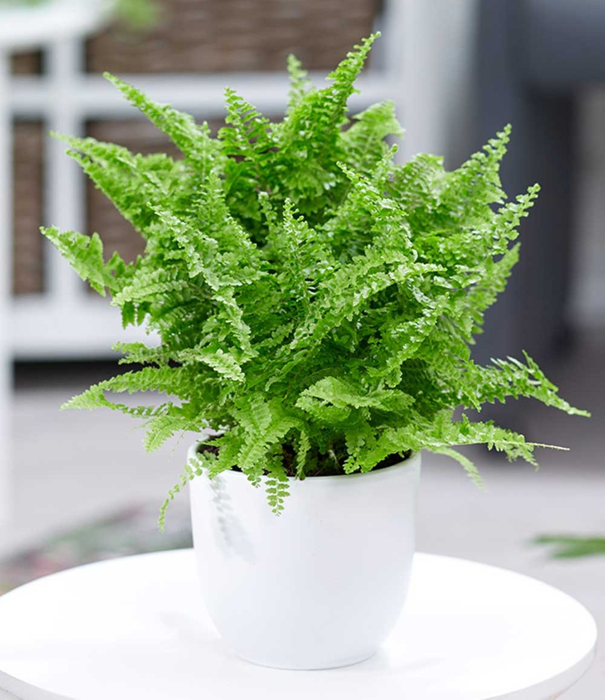

Fern

Nephrolepis vitale
It is a very nice plant!
Likes it VERY moist, but still doesn't complain when I forget to water it
Grows like crazy despite constant abuse!
Reminds me a little of my hair